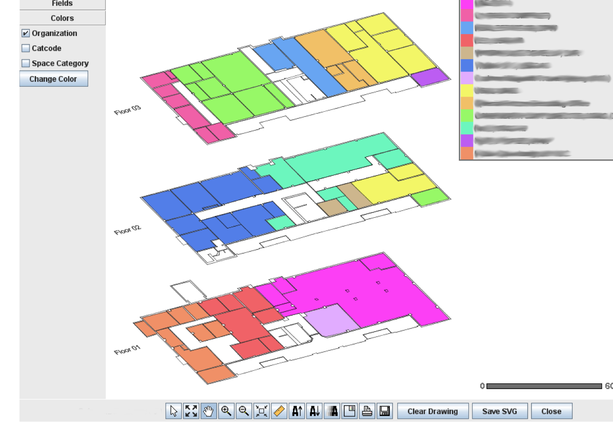
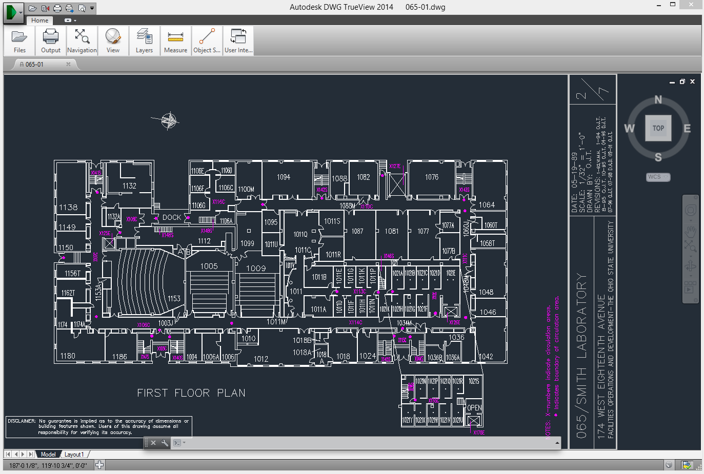
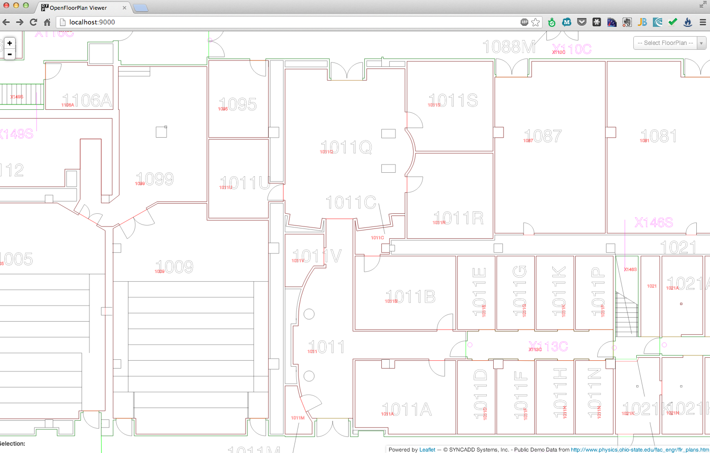
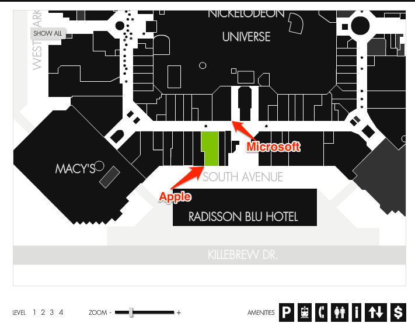
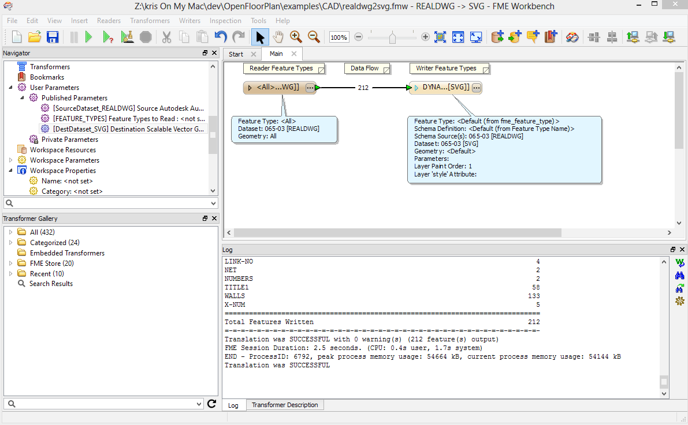

Going Inside with FOSS4G
Developing Interactive Building Floor Plans in HTML5
SYNCADD = Real Property Business Analytics
- Buildings & spaces inside buildings (what is there, how are they used, are they used efficiently)
- All fixed infrastructure: roads, parking lots, utilities, and more.
Visualize and Analyze Geospatial Context Inside & Outside Buildings
Problem
Limited open source solutions for working with CAD and BIM floorplan data in the web.
Web = The Future of Software
We need to get in on the ground floor (pun intented.)
Interior Mapping is Trending
- Floorplans integrated in web maps (Google Maps)
- Consumer Indoor Navigation
CAD → Friendly UI

→

The Old Way
OpenFloorPlan
Using Open Source Geospatial Tools
- Leaflet.js http://leafletjs.com/
- D3.js http://d3js.org/
&

Converting CAD to SVG
OpenFloorPlan Viewer
OFP.js Library
Wrapping SVG with FloorPlans
Layer Types
layerTypes.spaces = new ofp.LayerType(
'Space',
'ofp-space',
['#bgspa_space_area_b']);
layerTypes.columns = new ofp.LayerType(
'Column',
'ofp-column',
['#Column', '#bgspa_column_area_b']);
layerTypes.annotations = new ofp.LayerType(
'annotations',
'ofp-annotations',
['#Dimension', '#A-ANNO-DIMS']);
var fp = new ofp.FloorPlan(overlayPane.node(), layerTypes);
fp.annotations.hide();
Layer types detected automatically by default
Back to Demo
One more thing...
OpenFloorPlan Editor
- Fork of the OSM iD Editor https://github.com/systemed/iD
OpenFloorPlan Editor
Future
- Bring together editor/viewer (data/backends)
- Automate import of floorplan data (including conversion of proprietary formats)
- SVG-based FloorPlan Standard
- SVG optimization
- Integrate viewer into standard map viewers.
- Apply SYNCADD real property business analytics knowledge to build solutions for you or your clients.
THE END
Questions?
Kristofor Carle
kristofor.carle@syncadd.com